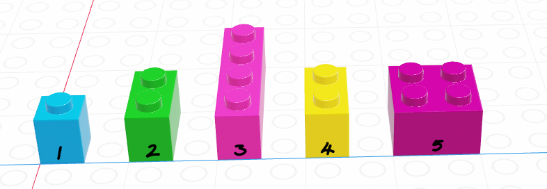
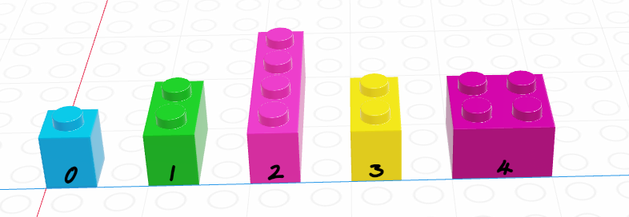
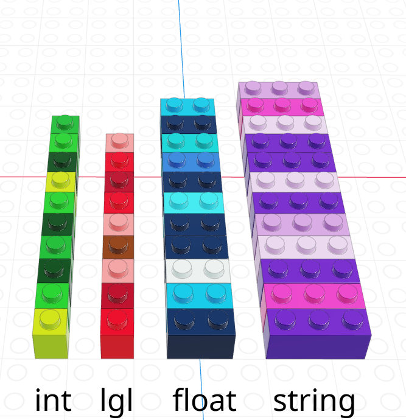
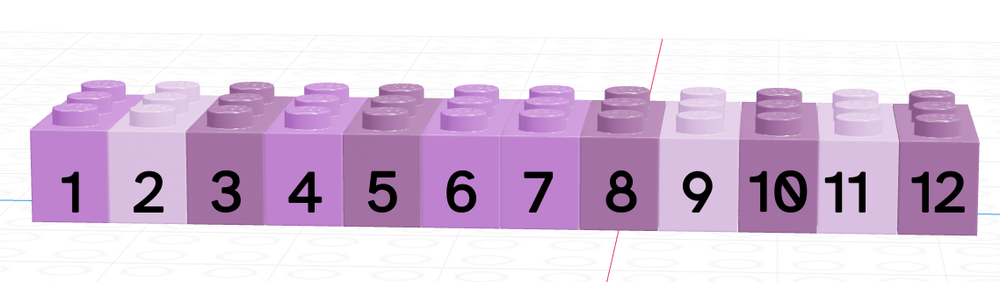
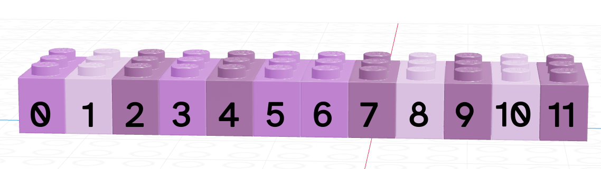
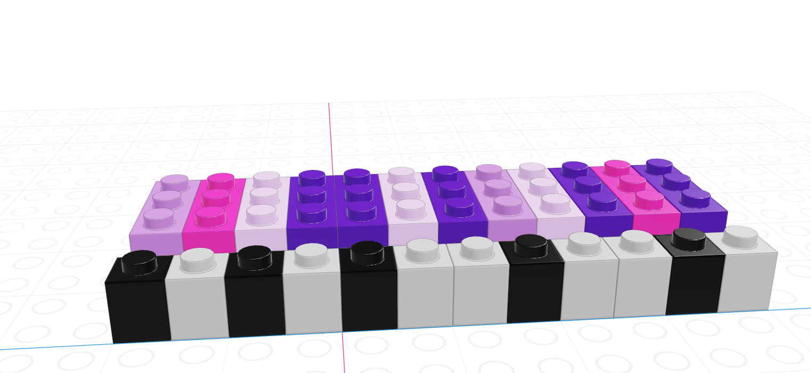
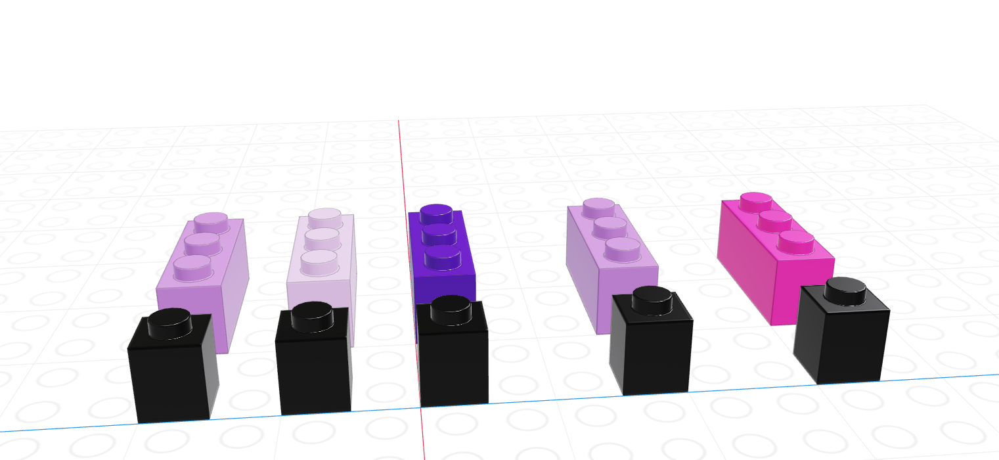
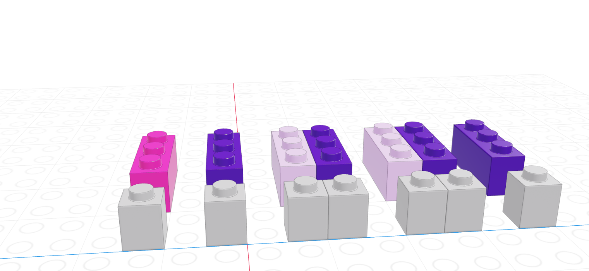
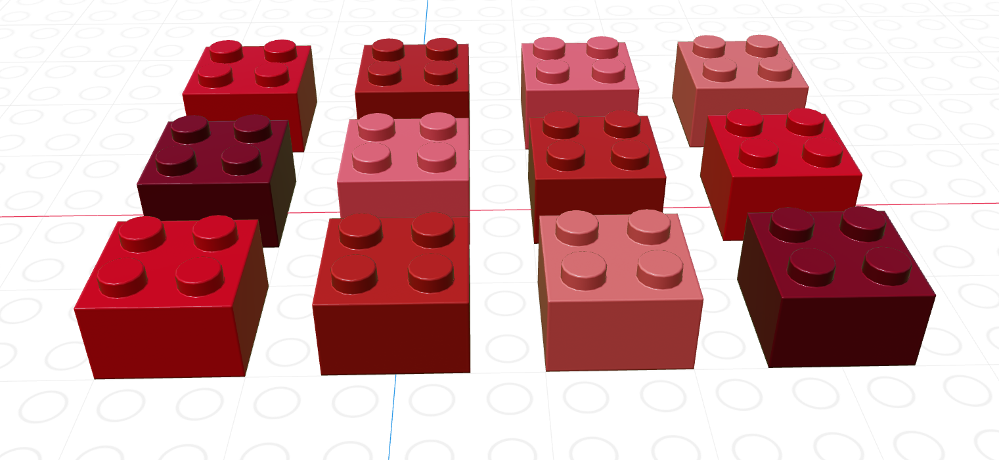
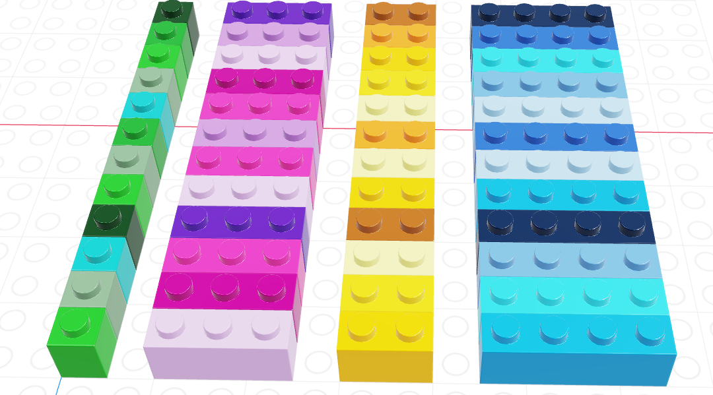

x <- list("a", 3, FALSE)
x
## [[1]]
## [1] "a"
##
## [[2]]
## [1] 3
##
## [[3]]
## [1] FALSE9 Data Structures
This chapter introduces some of the most important structures for storing and working with data: vectors, matrices, lists, and data frames.
9.1 Objectives
- Understand the differences between lists, vectors, data frames, matrices, and arrays in R and python
- Be able to use location-based indexing in R or python to pull out subsets of a complex data object
9.2 Data Structures Overview
In Chapter 7, we discussed 4 different data types: strings/characters, numeric/double/floats, integers, and logical/booleans. As you might imagine, things are about to get more complicated.
Data structures are more complex arrangements of information, but they are still (usually) created using the same data types we have previously discussed.
| Homogeneous | Heterogeneous | |
|---|---|---|
| 1D | vector | list |
| 2D | matrix | data frame |
| N-D | array |
Warning
Those of you who have taken programming classes that were more computer science focused will realize that I am leaving out a lot of information about lower-level structures like pointers. I’m making a deliberate choice to gloss over most of those details in this chapter, because it’s already hard enough to learn 2 languages worth of data structures at a time. In addition, R doesn’t have pointers No Pointers in R, [1], so leaving out this material in python streamlines teaching both two languages, at the cost of overly simplifying some python concepts. If you want to read more about the Python concepts I’m leaving out, check out [2].
9.3 Lists
A list is a one-dimensional column of heterogeneous data - the things stored in a list can be of different types.

x = ["a", 3, False]
x
## ['a', 3, False]The most important thing to know about lists, for the moment, is how to pull things out of the list. We call that process indexing.
9.3.1 Indexing
Every element in a list has an index (a location, indicated by an integer position)1.
In R, we count from 1.

x <- list("a", 3, FALSE)
x[1] # This returns a list
## [[1]]
## [1] "a"
x[1:2] # This returns multiple elements in the list
## [[1]]
## [1] "a"
##
## [[2]]
## [1] 3
x[[1]] # This returns the item
## [1] "a"
x[[1:2]] # This doesn't work - you can only use [[]] with a single index
## Error in x[[1:2]]: subscript out of boundsIn R, list indexing with [] will return a list with the specified elements.
To actually retrieve the item in the list, use [[]]. The only downside to [[]] is that you can only access one thing at a time.
In Python, we count from 0.

x = ["a", 3, False]
x[0]
## 'a'
x[1]
## 3
x[0:2]
## ['a', 3]In Python, we can use single brackets to get an object or a list back out, but we have to know how slices work. Essentially, in Python, 0:2 indicates that we want objects 0 and 1, but want to stop at 2 (not including 2). If you use a slice, Python will return a list; if you use a single index, python just returns the value in that location in the list.
We’ll talk more about indexing as it relates to vectors, but indexing is a general concept that applies to just about any multi-value object.
9.4 Vectors
A vector is a one-dimensional column of homogeneous data. Homogeneous means that every element in a vector has the same data type.
We can have vectors of any data type and length we want:

9.4.1 Indexing by Location
Each element in a vector has an index - an integer telling you what the item’s position within the vector is. I’m going to demonstrate indices with the string vector
| R | Python |
|---|---|
| 1-indexed language | 0-indexed language |
| Count elements as 1, 2, 3, 4, …, N | Count elements as 0, 1, 2, 3, , …, N-1 |
|  |  |
In R, we create vectors with the c() function, which stands for “concatenate” - basically, we stick a bunch of objects into a row.
digits_pi <- c(3, 1, 4, 1, 5, 9, 2, 6, 5, 3, 5)
# Access individual entries
digits_pi[1]
## [1] 3
digits_pi[2]
## [1] 1
digits_pi[3]
## [1] 4
# R is 1-indexed - a list of 11 things goes from 1 to 11
digits_pi[0]
## numeric(0)
digits_pi[11]
## [1] 5
# Print out the vector
digits_pi
## [1] 3 1 4 1 5 9 2 6 5 3 5In python, we create vectors using the array function in the numpy module. To add a python module, we use the syntax import <name> as <nickname>. Many modules have conventional (and very short) nicknames - for numpy, we will use np as the nickname. Any functions we reference in the numpy module will then be called using np.fun_name() so that python knows where to find them.2
import numpy as np
digits_list = [3,1,4,1,5,9,2,6,5,3,5]
digits_pi = np.array(digits_list)
# Access individual entries
digits_pi[0]
## 3
digits_pi[1]
## 1
digits_pi[2]
# Python is 0 indexed - a list of 11 things goes from 0 to 10
## 4
digits_pi[0]
## 3
digits_pi[11]
# multiplication works on the whole vector at once
## Error in py_call_impl(callable, dots$args, dots$keywords): IndexError: index 11 is out of bounds for axis 0 with size 11
digits_pi * 2
# Print out the vector
## array([ 6, 2, 8, 2, 10, 18, 4, 12, 10, 6, 10])
print(digits_pi)
## [3 1 4 1 5 9 2 6 5 3 5]Python has multiple things that look like vectors, including the pandas library’s Series structure. A Series is a one-dimensional array-like object containing a sequence of values and an associated array of labels (called its index).
import pandas as pd
digits_pi = pd.Series([3,1,4,1,5,9,2,6,5,3,5])
# Access individual entries
digits_pi[0]
## 3
digits_pi[1]
## 1
digits_pi[2]
# Python is 0 indexed - a list of 11 things goes from 0 to 10
## 4
digits_pi[0]
## 3
digits_pi[11]
# logical indexing works here too
## Error in py_call_impl(callable, dots$args, dots$keywords): KeyError: 11
digits_pi[digits_pi > 3]
# simple multiplication works in a vectorized manner
# that is, the whole vector is multiplied at once
## 2 4
## 4 5
## 5 9
## 7 6
## 8 5
## 10 5
## dtype: int64
digits_pi * 2
# Print out the series
## 0 6
## 1 2
## 2 8
## 3 2
## 4 10
## 5 18
## 6 4
## 7 12
## 8 10
## 9 6
## 10 10
## dtype: int64
print(digits_pi)
## 0 3
## 1 1
## 2 4
## 3 1
## 4 5
## 5 9
## 6 2
## 7 6
## 8 5
## 9 3
## 10 5
## dtype: int64The Series object has a list of labels in the first printed column, and a list of values in the second. If we want, we can specify the labels manually to use as e.g. plot labels later:
import pandas as pd
weekdays = pd.Series(['Sunday', 'Monday', 'Tuesday', 'Wednesday', 'Thursday', 'Friday', 'Saturday'], index = ['S', 'M', 'T', 'W', 'R', 'F', 'Sat'])
# access individual objs
weekdays[0]
## 'Sunday'
weekdays[1]
## 'Monday'
weekdays['S']
## 'Sunday'
weekdays['Sat']
# access the index
## 'Saturday'
weekdays.index
## Index(['S', 'M', 'T', 'W', 'R', 'F', 'Sat'], dtype='object')
weekdays.index[6] = 'Z' # you can't assign things to the index to change it
## Error in py_call_impl(callable, dots$args, dots$keywords): TypeError: Index does not support mutable operations
weekdays
## S Sunday
## M Monday
## T Tuesday
## W Wednesday
## R Thursday
## F Friday
## Sat Saturday
## dtype: objectWe can pull out items in a vector by indexing, but we can also replace specific things as well:
favorite_cats <- c("Grumpy", "Garfield", "Jorts", "Jean")
favorite_cats
## [1] "Grumpy" "Garfield" "Jorts" "Jean"
favorite_cats[2] <- "Nyan Cat"
favorite_cats
## [1] "Grumpy" "Nyan Cat" "Jorts" "Jean"favorite_cats = ["Grumpy", "Garfield", "Jorts", "Jean"]
favorite_cats
## ['Grumpy', 'Garfield', 'Jorts', 'Jean']
favorite_cats[1] = "Nyan Cat"
favorite_cats
## ['Grumpy', 'Nyan Cat', 'Jorts', 'Jean']If you’re curious about any of these cats, see the footnotes3.
9.4.2 Indexing with Logical Vectors
As you might imagine, we can create vectors of all sorts of different data types. One particularly useful trick is to create a logical vector that goes along with a vector of another type to use as a logical index.

If we let the black lego represent “True” and the grey lego represent “False”, we can use the logical vector to pull out all values in the main vector.
| Black = True, Grey = False | Grey = True, Black = False |
|---|---|
|  |  |
Note that for logical indexing to work properly, the logical index must be the same length as the vector we’re indexing. This constraint will return when we talk about data frames, but for now just keep in mind that logical indexing doesn’t make sense when this constraint isn’t true.
# Define a character vector
weekdays <- c("Sunday", "Monday", "Tuesday", "Wednesday", "Thursday", "Friday", "Saturday")
weekend <- c("Sunday", "Saturday")
# Create logical vectors
relax_days <- c(1, 0, 0, 0, 0, 0, 1) # doing this the manual way
relax_days <- weekdays %in% weekend # This creates a logical vector
# with less manual construction
relax_days
## [1] TRUE FALSE FALSE FALSE FALSE FALSE TRUE
school_days <- !relax_days # FALSE if weekend, TRUE if not
school_days
## [1] FALSE TRUE TRUE TRUE TRUE TRUE FALSE
# Using logical vectors to index the character vector
weekdays[school_days] # print out all school days
## [1] "Monday" "Tuesday" "Wednesday" "Thursday" "Friday"import numpy as np;
animals = np.array(["Cat", "Dog", "Snake", "Lizard", "Tarantula", "Hamster", "Gerbil", "Otter"])
# Define a logical vector
good_pets = np.array([True, True, False, False, False, True, True, False])
bad_pets = np.invert(good_pets) # Invert the logical vector
# so True -> False and False -> True
animals[good_pets]
## array(['Cat', 'Dog', 'Hamster', 'Gerbil'], dtype='<U9')
animals[bad_pets]
## array(['Snake', 'Lizard', 'Tarantula', 'Otter'], dtype='<U9')
animals[~good_pets] # equivalent to using bad_pets
## array(['Snake', 'Lizard', 'Tarantula', 'Otter'], dtype='<U9')9.4.3 Reviewing Types
As vectors are a collection of things of a single type, what happens if we try to make a vector with differently-typed things?
import numpy as np
np.array([2, False, 3.1415, "animal"]) # all converted to strings
## array(['2', 'False', '3.1415', 'animal'], dtype='<U32')
np.array([2, False, 3.1415]) # converted to floats
## array([2. , 0. , 3.1415])
np.array([2, False]) # converted to integers
## array([2, 0])As a reminder, this is an example of implicit type conversion - R and python decide what type to use for you, going with the type that doesn’t lose data but takes up as little space as possible.
Try it Out!
Create a vector of the integers from one to 30. Use logical indexing to pick out only the numbers which are multiples of 3.
x <- 1:30
x [ x %% 3 == 0]
## [1] 3 6 9 12 15 18 21 24 27 30import numpy as np
x = np.array(range(1, 31)) # because python is 0 indexed
x[ x % 3 == 0]
## array([ 3, 6, 9, 12, 15, 18, 21, 24, 27, 30])Extra challenge: Pick out numbers which are multiples of 2 or 3, but not multiples of 6!
This operation is xor, a.k.a. exclusive or. That is, X or Y, but not X AND Y.
We can write xor as (X OR Y) & !(X AND Y) – or we can use a predefined function: xor() in R, ^ in python.
import numpy as np
x = np.array(range(1, 31))
x2 = x % 2 == 0 # multiples of 2
x3 = x % 3 == 0 # multiples of 3
x2xor3 = x2 ^ x3
x[x2xor3]
## array([ 2, 3, 4, 8, 9, 10, 14, 15, 16, 20, 21, 22, 26, 27, 28])9.5 Matrices
A matrix is the next step after a vector - it’s a set of values arranged in a two-dimensional, rectangular format.

# Minimal matrix in R: take a vector,
# tell R how many rows you want
matrix(1:12, nrow = 3)
## [,1] [,2] [,3] [,4]
## [1,] 1 4 7 10
## [2,] 2 5 8 11
## [3,] 3 6 9 12
matrix(1:12, ncol = 3) # or columns
## [,1] [,2] [,3]
## [1,] 1 5 9
## [2,] 2 6 10
## [3,] 3 7 11
## [4,] 4 8 12
# by default, R will fill in column-by-column
# the byrow parameter tells R to go row-by-row
matrix(1:12, nrow = 3, byrow = T)
## [,1] [,2] [,3] [,4]
## [1,] 1 2 3 4
## [2,] 5 6 7 8
## [3,] 9 10 11 12
# We can also easily create square matrices
# with a specific diagonal (this is useful for modeling)
diag(rep(1, times = 4))
## [,1] [,2] [,3] [,4]
## [1,] 1 0 0 0
## [2,] 0 1 0 0
## [3,] 0 0 1 0
## [4,] 0 0 0 1In python, matrices are just a special case of a class called ndarray - n-dimensional arrays.
import numpy as np
# Minimal ndarray in python by typing in the values in a structured format
np.array([[0, 1, 2],
[3, 4, 5],
[6, 7, 8],
[9, 10, 11]])
# This syntax creates a list of the rows we want in our matrix
# Matrix in python using a data vector and size parameters
## array([[ 0, 1, 2],
## [ 3, 4, 5],
## [ 6, 7, 8],
## [ 9, 10, 11]])
np.reshape(range(0,12), (3,4))
## array([[ 0, 1, 2, 3],
## [ 4, 5, 6, 7],
## [ 8, 9, 10, 11]])
np.reshape(range(0,12), (4,3))
## array([[ 0, 1, 2],
## [ 3, 4, 5],
## [ 6, 7, 8],
## [ 9, 10, 11]])
np.reshape(range(0,12), (3,4), order = 'F')
## array([[ 0, 3, 6, 9],
## [ 1, 4, 7, 10],
## [ 2, 5, 8, 11]])In python, we create 2-dimensional arrays (aka matrices) either by creating a list of rows to join together or by reshaping a 1-dimensional array. The trick with reshaping the 1-dimensional array is the order argument: ‘F’ stands for “Fortran-like” and ‘C’ stands for “C-like”… so to go by column, you use ‘F’ and to go by row, you use ‘C’. Totally intuitive, right?
Most of the problems we’re going to work on will not require much in the way of matrix or array operations. For now, you need the following:
- Know that matrices exist and what they are (2-dimensional arrays of numbers)
- Understand how they are indexed (because it is extremely similar to data frames that we’ll work with in the next chapter)
- Be aware that there are lots of functions that depend on matrix operations at their core (including linear regression)
For more on matrix operations and matrix calculations, see Chapter 10.
9.5.1 Indexing in Matrices
Both R and python use [row, column] to index matrices. To extract the bottom-left element of a 3x4 matrix in R, we would use [3,1] to get to the third row and first column entry; in python, we would use [2,0] (remember that Python is 0-indexed).
As with vectors, you can replace elements in a matrix using assignment.
my_mat <- matrix(1:12, nrow = 3, byrow = T)
my_mat[3,1] <- 500
my_mat
## [,1] [,2] [,3] [,4]
## [1,] 1 2 3 4
## [2,] 5 6 7 8
## [3,] 500 10 11 12Remember that zero-indexing!
import numpy as np
my_mat = np.reshape(range(1, 13), (3,4))
my_mat[2,0] = 500
my_mat
## array([[ 1, 2, 3, 4],
## [ 5, 6, 7, 8],
## [500, 10, 11, 12]])9.5.2 Matrix Operations
There are a number of matrix operations that we need to know for basic programming purposes:
- scalar multiplication \[c*\textbf{X} = c * \left[\begin{array}{cc} x_{1,1} & x_{1, 2}\\x_{2,1} & x_{2,2}\end{array}\right] = \left[\begin{array}{cc} c*x_{1,1} & c*x_{1, 2}\\c*x_{2,1} & c*x_{2,2}\end{array}\right]\]
- transpose - flip the matrix across the left top -> right bottom diagonal. \[t(\textbf{X}) = \left[\begin{array}{cc} x_{1,1} & x_{1, 2}\\x_{2,1} & x_{2,2}\end{array}\right]^T = \left[\begin{array}{cc} x_{1,1} & x_{2,1}\\x_{1,2} & x_{2,2}\end{array}\right]\]
- matrix multiplication (dot product) - If you haven’t had this in Linear Algebra, here’s a preview. See [3] for a better explanation \[\textbf{X}*\textbf{Y} = \left[\begin{array}{cc} x_{1,1} & x_{1, 2}\\x_{2,1} & x_{2,2}\end{array}\right] * \left[\begin{array}{cc} y_{1,1} \\y_{2,1} \end{array}\right] = \left[\begin{array}{c}x_{1,1}*y_{1,1} + x_{1,2}*y_{2,1} \\x_{2, 1}*y_{1,1} + x_{2,2}*y_{2,1}\end{array}\right]\] Note that matrix multiplication depends on having matrices of compatible dimensions. If you have two matrices of dimension \((a \times b)\) and \((c \times d)\), then \(b\) must be equal to \(c\) for the multiplication to work, and your result will be \((a \times d)\).
x <- matrix(c(1, 2, 3, 4), nrow = 2, byrow = T)
y <- matrix(c(5, 6), nrow = 2)
# Scalar multiplication
x * 3
## [,1] [,2]
## [1,] 3 6
## [2,] 9 12
3 * x
## [,1] [,2]
## [1,] 3 6
## [2,] 9 12
# Transpose
t(x)
## [,1] [,2]
## [1,] 1 3
## [2,] 2 4
t(y)
## [,1] [,2]
## [1,] 5 6
# matrix multiplication (dot product)
x %*% y
## [,1]
## [1,] 17
## [2,] 39import numpy as np
x = np.array([[1,2],[3,4]])
y = np.array([[5],[6]])
# scalar multiplication
x*3
## array([[ 3, 6],
## [ 9, 12]])
3*x
# transpose
## array([[ 3, 6],
## [ 9, 12]])
x.T # shorthand
## array([[1, 3],
## [2, 4]])
x.transpose() # Long form
# Matrix multiplication (dot product)
## array([[1, 3],
## [2, 4]])
np.dot(x, y)
## array([[17],
## [39]])9.6 Arrays
Arrays are a generalized n-dimensional version of a vector: all elements have the same type, and they are indexed using square brackets in both R and python: [dim1, dim2, dim3, ...]
I don’t think you will need to create 3+ dimensional arrays in this class, but if you want to try it out, here is some code.
Note that displaying this requires 2 slices, since it’s hard to display 3D information in a 2D terminal arrangement.
import numpy as np
np.array([[[1,2],[3,4]],[[5,6], [7,8]]])
## array([[[1, 2],
## [3, 4]],
##
## [[5, 6],
## [7, 8]]])9.7 Data Frames
In the previous sections, we talked about homogeneous structures: arrangements of data, like vectors and matrices, where every entry in the larger structure has the same type. In the rest of this chapter, we’ll be talking about the root of most data science analysis projects: the data frame.
Like an excel spreadsheet, data frames are arrangements of data in columns and rows.
This format has two main restrictions:
- Every entry in each column must have the same data type
- Every column must have the same number of rows

The picture above shows a data frame of 4 columns, each with a different data type (brick size/hue). The data frame has 12 rows. This picture may look similar to one that we used to show logical indexing in the last chapter, and that is not a coincidence. You can get everything from a data frame that you would get from a collection of 4 separate vectors… but there are advantages to keeping things in a data frame instead.
Motivating Data Frames: Working with Multiple Vectors
Consider for a moment https://worldpopulationreview.com/states, which lists the population of each state. You can find this dataset in CSV form here.
In the previous sections, we learned how to make different vectors in R, numpy, and pandas. Let’s see what happens when we work with the data above as a set of vectors/Series compared to what happens when we work with data frames.
(I’m going to cheat and read this in using pandas functions we haven’t learned yet to demonstrate why this stuff matters.)
import pandas as pd
data = pd.read_html("https://worldpopulationreview.com/states")[0]
## Error in py_call_impl(callable, dots$args, dots$keywords): ValueError: No tables found
list(data.columns) # get names
# Create a few population series
## Error in py_call_impl(callable, dots$args, dots$keywords): NameError: name 'data' is not defined
population2022 = pd.Series(data['2022 Population'].values, index = data['State'].values)
## Error in py_call_impl(callable, dots$args, dots$keywords): NameError: name 'data' is not defined
population2021 = pd.Series(data['2021 Population'].values, index = data['State'].values)
## Error in py_call_impl(callable, dots$args, dots$keywords): NameError: name 'data' is not defined
population2010 = pd.Series(data['2010 Census'].values, index = data['State'].values)
## Error in py_call_impl(callable, dots$args, dots$keywords): NameError: name 'data' is not definedSuppose that we want to sort each population vector by the population in that year.
import pandas as pd
data = pd.read_html("https://worldpopulationreview.com/states")[0]
## Error in py_call_impl(callable, dots$args, dots$keywords): ValueError: No tables found
population2022 = pd.Series(data['2022 Population'].values, index = data['State'].values).sort_values()
## Error in py_call_impl(callable, dots$args, dots$keywords): NameError: name 'data' is not defined
population2021 = pd.Series(data['2021 Population'].values, index = data['State'].values).sort_values()
## Error in py_call_impl(callable, dots$args, dots$keywords): NameError: name 'data' is not defined
population2010 = pd.Series(data['2010 Census'].values, index = data['State'].values).sort_values()
## Error in py_call_impl(callable, dots$args, dots$keywords): NameError: name 'data' is not defined
population2022.head()
## Error in py_call_impl(callable, dots$args, dots$keywords): NameError: name 'population2022' is not defined
population2021.head()
## Error in py_call_impl(callable, dots$args, dots$keywords): NameError: name 'population2021' is not defined
population2010.head()
## Error in py_call_impl(callable, dots$args, dots$keywords): NameError: name 'population2010' is not definedThe only problem is that by doing this, we’ve now lost the ordering that matched across all 3 vectors. Pandas Series are great for this, because they use labels that allow us to reconstitute which value corresponds to which label, but in R or even in numpy arrays, vectors don’t inherently come with labels. In these situations, sorting by one value can actually destroy the connection between two vectors!
df <- read.csv("https://raw.githubusercontent.com/srvanderplas/Stat151/main/data/population2022.csv")
# Use vectors instead of the data frame
state <- df$State
pop2022 <- df$Pop
pop2021 <- df$Pop2021
pop2010 <- df$Pop2010
# Create a vector to index population in 2022 in order
order2022 <- order(pop2022)
# To keep variables together, we have to do things like this:
head(state[order2022])
## [1] "Wyoming" "Vermont" "District of Columbia"
## [4] "Alaska" "North Dakota" "South Dakota"
head(pop2022[order2022])
## [1] 582233 622882 718355 720763 774008 902542
# It makes more sense just to reorder the whole data frame:
head(df[order2022,])
## rank State Pop Growth Pop2021 Pop2010 growthSince2010
## 52 52 Wyoming 582233 0.0020 581075 564487 0.0314
## 51 51 Vermont 622882 -0.0006 623251 625879 -0.0048
## 50 50 District of Columbia 718355 0.0059 714153 605226 0.1869
## 49 49 Alaska 720763 -0.0050 724357 713910 0.0096
## 48 48 North Dakota 774008 0.0052 770026 674715 0.1472
## 47 47 South Dakota 902542 0.0066 896581 816166 0.1058
## Percent density
## 52 0.0017 5.9967
## 51 0.0019 67.5797
## 50 0.0021 11776.3115
## 49 0.0021 1.2631
## 48 0.0023 11.2173
## 47 0.0027 11.9052The primary advantage to data frames is that rows of data are kept together. Since we often think of a row of data as a single observation in a sample, this is an extremely important feature that makes data frames a huge improvement on a collection of vectors of the same length: it’s much harder for observations in a single row to get shuffled around and mismatched!
9.7.1 Data Frame Basics
In R, data frames are built in as type data.frame, though there are packages that provide other implementations of data frames that have additional features, such as the tibble package used in many other common packages. We will cover functions from both base R and the tibble package in this chapter.
In Python, we will use the pandas library, which is conventionally abbreviated pd. So before you use any data frames in python, you will need to add the following line to your code: import pandas as pd.
Try it out
The dataset state.x77 contains information on US state statistics in the 1970s. By default, it is a matrix, but we can easily convert it to a data frame, as shown below.
data(state)
state_facts <- data.frame(state.x77)
state_facts <- cbind(state = row.names(state_facts), state_facts, stringsAsFactors = F)
# State names were stored as row labels
# Store them in a variable instead, and add it to the data frame
row.names(state_facts) <- NULL # get rid of row names
head(state_facts)
## state Population Income Illiteracy Life.Exp Murder HS.Grad Frost Area
## 1 Alabama 3615 3624 2.1 69.05 15.1 41.3 20 50708
## 2 Alaska 365 6315 1.5 69.31 11.3 66.7 152 566432
## 3 Arizona 2212 4530 1.8 70.55 7.8 58.1 15 113417
## 4 Arkansas 2110 3378 1.9 70.66 10.1 39.9 65 51945
## 5 California 21198 5114 1.1 71.71 10.3 62.6 20 156361
## 6 Colorado 2541 4884 0.7 72.06 6.8 63.9 166 103766
# Write data out so that we can read it in using Python
write.csv(state_facts, file = "data/state_facts.csv", row.names = F)
## Error in file(file, ifelse(append, "a", "w")): cannot open the connectionWe can write out the built in R data and read it in using pd.read_csv, which creates a DataFrame in pandas.
import pandas as pd
state_facts = pd.read_csv("https://raw.githubusercontent.com/srvanderplas/unl-stat850/main/data/state_facts.csv")How many rows and columns does it have? Can you find different ways to get that information?
The
Illiteracycolumn contains the percent of the population of each state that is illiterate. Calculate the number of people in each state who are illiterate, and store that in a new column calledTotalNumIlliterate. Note:Populationcontains the population in thousands.Calculate the average population density of each state (population per square mile) and store it in a new column
PopDensity. Using the R reference card, can you find functions that you can combine to get the state with the minimum population density?
# 3 ways to get rows and columns
str(state_facts)
## 'data.frame': 50 obs. of 9 variables:
## $ state : chr "Alabama" "Alaska" "Arizona" "Arkansas" ...
## $ Population: num 3615 365 2212 2110 21198 ...
## $ Income : num 3624 6315 4530 3378 5114 ...
## $ Illiteracy: num 2.1 1.5 1.8 1.9 1.1 0.7 1.1 0.9 1.3 2 ...
## $ Life.Exp : num 69 69.3 70.5 70.7 71.7 ...
## $ Murder : num 15.1 11.3 7.8 10.1 10.3 6.8 3.1 6.2 10.7 13.9 ...
## $ HS.Grad : num 41.3 66.7 58.1 39.9 62.6 63.9 56 54.6 52.6 40.6 ...
## $ Frost : num 20 152 15 65 20 166 139 103 11 60 ...
## $ Area : num 50708 566432 113417 51945 156361 ...
dim(state_facts)
## [1] 50 9
nrow(state_facts)
## [1] 50
ncol(state_facts)
## [1] 9
# Illiteracy
state_facts$TotalNumIlliterate <- state_facts$Population * 1e3 * (state_facts$Illiteracy/100)
# Population Density
state_facts$PopDensity <- state_facts$Population * 1e3/state_facts$Area
# in people per square mile
# minimum population
state_facts$state[which.min(state_facts$PopDensity)]
## [1] "Alaska"# Ways to get rows and columns
state_facts.shape
## (50, 9)
state_facts.index.size # rows
## 50
state_facts.columns.size # columns
## 9
state_facts.info() # columns + rows + missing counts + data types
# Illiteracy
## <class 'pandas.core.frame.DataFrame'>
## RangeIndex: 50 entries, 0 to 49
## Data columns (total 9 columns):
## # Column Non-Null Count Dtype
## --- ------ -------------- -----
## 0 state 50 non-null object
## 1 Population 50 non-null int64
## 2 Income 50 non-null int64
## 3 Illiteracy 50 non-null float64
## 4 Life.Exp 50 non-null float64
## 5 Murder 50 non-null float64
## 6 HS.Grad 50 non-null float64
## 7 Frost 50 non-null int64
## 8 Area 50 non-null int64
## dtypes: float64(4), int64(4), object(1)
## memory usage: 3.6+ KB
state_facts["TotalNumIlliterate"] = state_facts["Population"] * 1e3 * state_facts["Illiteracy"]/100
# Population Density
state_facts["PopDensity"] = state_facts["Population"] * 1e3/state_facts["Area"]
# in people per square mile
# minimum population
min_dens = state_facts["PopDensity"].min()
# Get location of minimum population
loc_min_dens = state_facts.PopDensity.isin([min_dens])
# Pull out matching state
state_facts.state[loc_min_dens]
## 1 Alaska
## Name: state, dtype: object9.7.2 Creating Data Frames
It is possible to create data frames from scratch by building them out of simpler components, such as lists of vectors or dicts of Series. This tends to be useful for small data sets, but it is more common to read data in from e.g. CSV files, which I’ve used several times already but haven’t yet shown you how to do (see Chapter 15 for the full how-to).
While it’s not so hard to create data frames from scratch for small data sets, it’s very tedious if you have a lot of data (or if you can’t type accurately). An easier way to create a data frame (rather than typing the whole thing in) is to read in data from somewhere else - a file, a table on a webpage, etc. We’re not going to go into the finer points of this (you’ll get into that in Chapter 15), but it is useful to know how to read neatly formatted data.
One source of (relatively neat) data is the TidyTuesday github repository4
9.7.3 Working with Data Frames
Often, we want to know what a data frame contains. R and pandas both have easy summary methods for data frames.
9.8 References
[1]
N. Matloff, The art of r programming: A tour of statistical software design. No Starch Press, 2011 [Online]. Available: https://books.google.com/books?id=o2aLBAAAQBAJ
[2]
M. Fripp, “Answer to "python pandas dataframe, is it pass-by-value or pass-by-reference". Stack overflow,” Aug. 12, 2016. [Online]. Available: https://stackoverflow.com/a/38925257/2859168. [Accessed: Jan. 10, 2023]
[3]
MathIsFun.com, “How to multiply matrices. Math is fun,” 2021. [Online]. Available: https://www.mathsisfun.com/algebra/matrix-multiplying.html. [Accessed: Jan. 10, 2023]
Throughout this section (and other sections), lego pictures are rendered using https://www.mecabricks.com/en/workshop. It’s a pretty nice tool for building stuff online!↩︎
A similar system exists in R libraries, but R doesn’t handle multiple libraries having the same function names well, which leads to all sorts of confusion. At least python is explicit about it.↩︎
Grumpy cat, Garfield, Nyan cat. Jorts and Jean: The initial post and the update (both are worth a read because the story is hilarious). The cats also have a Twitter account where they promote workers rights.↩︎
Tidy Tuesday is a collaborative project where the R community gets together and explores a dataset, cleaning it, visualizing it, and generally working to collectively hone R skills together. You can find some very nice YouTube livestreams, as well as lots of examples using the #tidytuesday twitter tag.↩︎